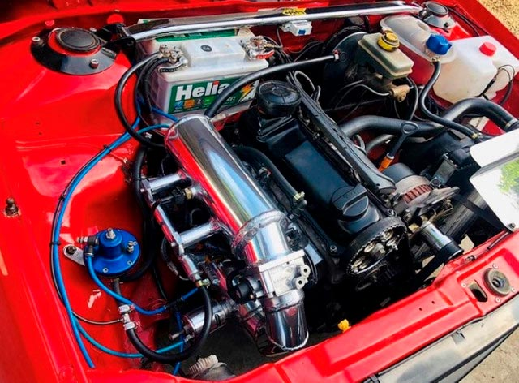

Motor original de fabrica
Nessa imagem acima nos vemos um motor 1.8 ap aproximadamente de 85 cv
era muito comum em 92, esse modelos de carro e muito procurado pelo
seu motor. Na quela epoca ser muito bom e baixa manutenção.
Ler mais

Esposição de opalas antigos
Sempre estão promovendo eventos em toda parte os amantes de carro
principalmente essa lenda que foi os opala que ficou na historia
quem conhece sabe o que significa. e porisso que sempre tem eventos
para mostrar os modelos e reliquias que nao tem preço e vai ficar na historia.
Ler mais

Motor alta performace turbo
quando falamos de motor de alta performace estamms falando de motor
com potencia,motor que teve varias alteraçoes pra chegar nesse nivel como
mostra imagem acima podendo chegar 400cv ou ate mais hoje em dia e Muito
comum ver carro turbo pelas rua tornou uma modinha carros modificado rodando
no dia dia.
Ler mais

Carro modelo lowraider
esses carro veio da cultura mexicana pintura retrabalhada a mão
nao vemos carro desse nilvel andando direto pelas rua e so mesmo em eventos
sao muito chamativos pra compra um desses nao e barato por ser um carro antigo
tem valor de carro zero sendo asim os proprietarios nao para em qualquer lugar
motivos de aranha pintura ou ate mesmo baterem sempre estacionado em lugares
estrategico pra nao over nemum dano no carro. Esses sao os modelos impalas.
Ler mais

Carros lowraider
Os lowraider tem susupenção preparada sistema hidraulico
com 6 baterias grandes pra ligar o sistema de susupenção
com isso carro fica pulando,andando com 3 rodas
estilo diferente que veio pra cultura brasileira.
Ler mais

exposição de fusca
Esse tambem e uma lenda que nunca vai ser esquecido pelo
brsileiro grande fusca muitos amante da marca reunem em uma exposição
pra mostra seu carro o quanto esta em perfeitas condiçoes e trocando
ideias e historias.
Ler mais